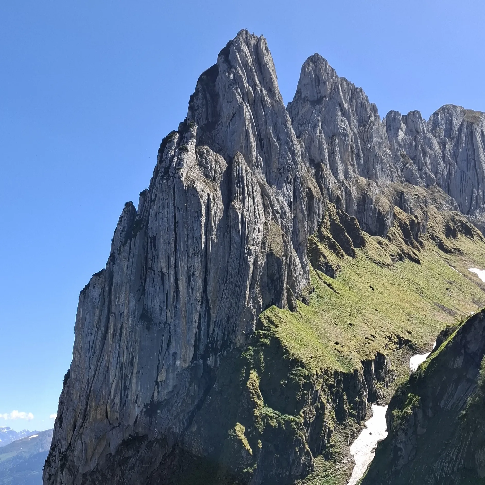
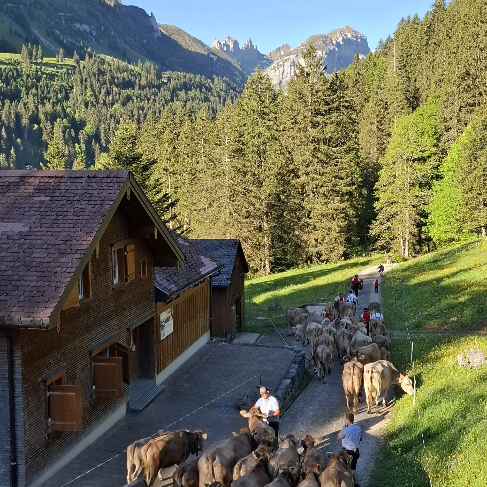
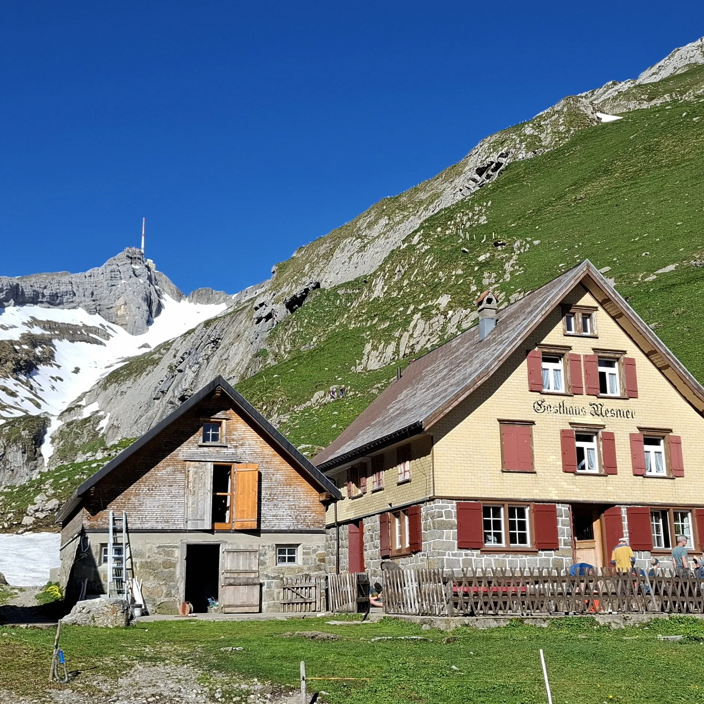

Un week-end de printemps digne de l’été!
C’est à l’opposé de la romandie que j’ai emmené un groupe découvrir les Préalpes. Au départ de Wasserauen, nous sommes montés au Seealpsee et avons découvert le fabuleux panorama qui décor les bière Quöllfrisch 🍺 C’est dans ce décor que nous avons atteint la cabane Mesmer, à 1600m d’altitude. 🏠
Le deuxième jour a commencé avec la vue dégagée sur le Säntis. Nous avons découvert les panoramas avec l'ascension jusqu’au col Widderalpsattel, le Fählensee qui nous a permis de nous rafraîchir, et le Saxerlücke qui offre une vue plongeante sur la chaîne de Chrüzberg. ⛰️ Une autre icône du canton d’Appenzell. Pour conclure la journée, nous sommes arrivés à l’auberge Plattenbödeli.
Pour finir le troisième jour du trek, l'ambiance était donnée par le son des cloches des vaches qui montaient à l’alpage. 🐮 Nous avons découvert Alpsigel, un petit hameau où les gardiens d’alpage font paître leurs vaches. Un paysage typiquement suisse pour finir en beauté la descente jusque Wasserauen.


